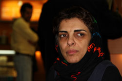

|
|
پروين اردلان ، هنگام خروج از كشور براي شركت در مراسم اهداي جايزه اولاف پالمه ممنوع الخروج شد
دو شنبه13 اسفند 1386
تغيير براي برابري : پروين اردلان كه بامداد امروز ، براي شركت در مراسم اهداي جايزه اولاف پالمه ، عازم استكهلم بود ، پس از انجام تشريفات قانوني خروج از كشور و سوار شدن به هواپيما ، با حكم دادستاني از هواپيما پياده شد و پس از آن نيز گذرنامه وي ضبط شد .

وي در گفتگو با تغيير براي برابري گفت : من نه ممنوع الخروج بودم و نه هنگام كنترل گذرنامه در اين زمينه صحبتي با من شد ، اما بعد از آن كه سوار هواپيما شدم ، اسمم از بلندگوي هواپيما اعلام شد و با آمدن ماموران فرودگاه ، به كادر پرواز اير فرانس گفته شد كه من ممنوع الخروج هستم و نمي توانم از ايران خارج شوم .
وي اضافه كرد ، پس از ضبط گذرنامه ، به من برگه اي داده شد كه طبق آن بايد طي روزهاي آينده ،براي رسيدگي به وضعيت ممنوع الخروجي ام به اداره كل امور گذرنامه نهاد رياست جمهوري مراجعه كنم .
بنياد مستقل و غير دولتي اولاف پالمه ، قرار بود در تاريخ 6 مارس جايزه سال 2007 خود را به پاس تلاشهاي برابري خواهانه در جنبش زنان به پروين اردلان اهدا كند.
در ارتباط با خبر بخوانيد:
ايران پرس نيوز